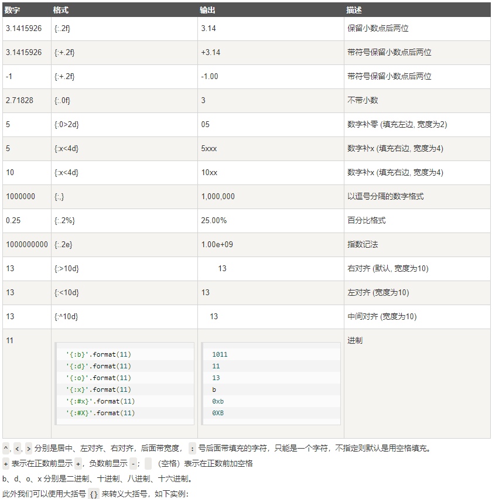
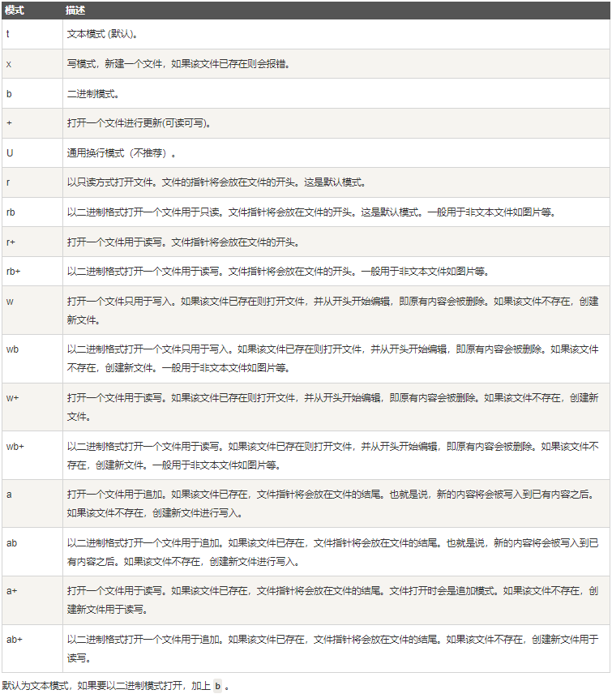

这篇总结目的是为了自己记忆和查找 大部分都是从www.runoob.com 看来的
abs() 返回数字的绝对值
example：
all() 判断可迭代参数中的所有元素是否都为true.
当所有元素不为0，空，False, None时， 返回True，否则False.
但是空列表和空元组返回True
（其实就是变相找参数里边有没有0，空，False, None）
example：
1 2 3 4 5 6 7 8 9 10 11 >>> all(['a', 'b', 'c', 'd']) True >>> all(['a', 'b', '', 'd']) False >>> all((0, 1, 2, 3)) False >>> all([]) # 空列表 True
any() 判断参数里边有没有True
只要参数里有除了0，空，False, None之外的内容，就返回True
但空列表，空元组直接返回False
（其实就是变相找参数里边有没有True）
example：
1 2 3 4 5 6 7 8 >>>any(['a', 'b', 'c', 'd']) # 列表list，元素都不为空或0 True >>> any([0, '', False]) # 列表list,元素全为0,'',false False >>> any([]) # 空列表 False
上边两个函数为什么当参数是空的时候，结果是这么的不一样，其实可以从它们的等价函数看出来：
1 2 3 4 5 def all(iterable): for element in iterable: if not element: return False return True
当参数是空的时候，for语句直接跳过了，所以这里all就会直接返回True
ascii() ascii() 函数类似 repr() 函数, 返回一个表示对象的字符串, 但是对于字符串中的非 ASCII 字符则返回通过 repr() 函数使用 \x, \u 或 \U 编码的字符。 生成字符串类似 Python2 版本中 repr() 函数的返回值。
其实就是用ascii来解码（decode）数值
example：
1 2 >>> ascii('runoob') "'runoob'"
bin() 返回一个整数 int 或者长整数 long int 的二进制表示。
example：
1 2 3 4 >>>bin(10) '0b1010' >>> bin(20) '0b10100'
bool() 将参数化为bool类型，没参数就返回False
example：
1 2 3 4 5 6 >>>bool() False >>> bool(0) False >>> bool(1) True
值得一提的是，这里也是只有参数为0，空，False, None才返回False, 其他的比如bool((0,0))也是返回True, 因为这里判断（0,0）是个整体且不是上边四种之一。
bytearray() 把字符串(char)转化为字节(byte)
语法是：
1 bytearray(string, encoding[, errors]) -> bytearray
首先要理解这里什么是”编码(encoding)”：指某种将 Unicode 字符串转换为字节序列（bytearray对象）的规则，其包含了从”抽象字符序列”(char)到”字节序列”(byte)的全部过程。比如说“utf-8”,”ascii”.
一般，当source是个字符串时,一定要在函数的第二位加上encoding。
有的时候encoding并不能编码字符串，这个时候就需要设立函数第三位“errors”，也就是错误处理方案。默认’strict’会在编码错误时抛出UnicodeError. 也可自己设置是’ignore’, ‘replace’, ‘xmlcharrefreplace’, ‘backslashreplace’。
example：
1 2 3 4 5 6 7 8 9 10 11 12 13 14 >>> bytearray('abcd','utf-8') bytearray(b'abcd') >>> bytearray('鲸','utf-8') bytearray(b'\xe9\xb2\xb8') >>> bytearray('鲸','ascii') Traceback (most recent call last): File "<pyshell#11>", line 1, in <module> bytearray('鲸','ascii') UnicodeEncodeError: 'ascii' codec can't encode character '\u9cb8' in position 0: ordinal not in range(128) >>> bytearray('鲸','ascii','ignore') bytearray(b'')
和C语言不同，bytearray会以转义序列或ASCII字符显示相应数值(如，将十进制整数 65 显示为字母 A)，但根源上bytearray对象的每个索引位置依旧是数值并非字符。（bytearray对象指的是这个函数的输出）
下面演示一些它如何显示数值的：
如果索引位置对应ASCII编码中可见的字符，那么bytearray对象的索引位就会直接显示该字符：
1 2 >>> bytearray((0x41, 0x42)) bytearray(b'AB')
如果是ASCII中的不可见字符，但该字符有“独立转义序列”，那么就显示“独立转义序列”：
1 2 >>> bytearray((0x0A, 0x0D)) bytearray(b'\n\r')
如果是不可见字符且没有“独立转义序列”或超出ASCII的范围，那么索引位置会显示十六进制('\xhh')转义序列。在 bytearray 对象中，十六进制('\xhh')转义序列用于表示具有指定数值的字节。
1 2 >>> bytearray((0x01, 0xFE)) bytearray(b'\x01\xfe')
这样方便的是，如果各个字节的数值正好是ASCII相应字节，那么不用解码就可以直接读懂。（a.decode(‘b’)来解码，a代表一个bytearay实例，b某encoding方法）
1 2 3 4 5 >>> hi = bytearray('hello!\n','ascii') >>> hi bytearray(b'hello!\n') # 虽然是字节序列，但是不用解码也读懂 >>> hi.decode('ascii') 'hello!\n'
除了上边说的，bytearray()也有一些特殊用法：
source 没任何参数时，创建一个空实例：
1 2 3 # bytearray() -> empty bytes array >>> bytearray() bytearray(b'')
source 是一个整数 时，将创建一个长度为 source 且每个字节均为空的 bytearray 对象:
1 2 3 # bytearray(int) -> bytearray >>> bytearray(5) bytearray(b'\x00\x00\x00\x00\x00')
source 是一个由自然数构成的可迭代对象 ，且每个元素的值 x 均满足 0 ≤ x ≤ 255:
1 2 3 4 5 # bytearray(iterable_of_ints) -> bytearray >>> bytearray(range(5)) # 最大范围是range(256) bytearray(b'\x00\x01\x02\x03\x04') >>> bytearray([1,2,3,4,5]) bytearray(b'\x01\x02\x03\x04\x05')
source 是一个 bytes 对象，将通过缓冲器协议(buffer protocol)复制其中的二进制数据:
1 2 3 # bytearray(bytes) -> mutable copy of bytes >>> bytearray(b'Hi!') bytearray(b'Hi!')
source 是一个实现了缓冲区(buffer) API 的对象时，则会使用 source 的只读缓冲区来初始化 bytearray 对象。(这个我现在还不太懂)
1 # bytearray(buffer) -> mutable copy of buffer
bytes() bytearray 的不可变版本, 语法什么的都和bytearray一样
example：
1 2 3 4 5 6 7 8 9 10 11 12 13 >>>a = bytes([1,2,3,4]) >>> a b'\x01\x02\x03\x04' >>> type(a) <class 'bytes'> >>> >>> a = bytes('hello','ascii') >>> >>> a b'hello' >>> type(a) <class 'bytes'> >>>
callable() 检查一个对象是否是可调用的。如果返回 True，object 仍然可能调用失败；但如果返回 False，调用对象 object 绝对不会成功。
对于函数、方法、lambda 函式、 类以及实现了 call
example：
1 2 3 4 5 6 7 8 9 10 11 12 13 14 15 16 17 18 19 20 21 22 23 24 25 26 27 28 >>>callable(0) False >>> callable("runoob") False >>> def add(a, b): ... return a + b ... >>> callable(add) # 函数返回 True True >>> class A: # 类 ... def method(self): ... return 0 ... >>> callable(A) # 类返回 True True >>> a = A() >>> callable(a) # 没有实现 __call__, 返回 False False >>> class B: ... def __call__(self): ... return 0 ... >>> callable(B) True >>> b = B() >>> callable(b) # 实现 __call__, 返回 True True
那怎么样算是可调用呢？ 我现在的理解是可以作为一个工具，实现一定的作用。比如类就可以作为创建某个类实例的工具，加了**call ** 方法的类实例可以作为“print”这个类先写好的某个内容的工具。
chr() 用一个范围在 range（256）内的（就是0～255）整数作参数，返回一个对应的字符。
这个整数可以是10进制也可以是16进制的形式的数字。
将会返回当前整数对应的 ASCII 字符。
example：
1 2 3 4 >>>print chr(0x30), chr(0x31), chr(0x61) # 十六进制 0 1 a >>> print chr(48), chr(49), chr(97) # 十进制 0 1 a
（待会儿我会把ASCII表放到Blog上）
classmethod classmethod 修饰符对应的函数不需要实例化，不需要 self 参数，但第一个参数需要是表示自身类的 cls 参数，可以来调用类的属性，类的方法，实例化对象等。
这是一个不需要把类实例化就可以调用类里面的function的修饰符（？）
example：
1 2 3 4 5 6 7 8 9 10 11 class A(object): bar = 1 def func1(self): print ('foo') @classmethod def func2(cls): print ('func2') print (cls.bar) cls().func1() # 调用 foo 方法 A.func2() # 不需要实例化
上边这个例子就是直接用类的名字（A）来调用了函数.
cmp() cmp(x,y) 函数用于比较2个对象，如果 x < y 返回 -1, 如果 x == y 返回 0, 如果 x > y 返回 1。
example：
1 2 3 4 cmp(80, 100) : -1 cmp(180, 100) : 1 cmp(-80, 100) : -1 cmp(80, -100) : 1
但是现在python3应该是没cmp函数了，需要实现比较功能可以import operator：
1 2 3 4 5 6 7 8 9 10 11 12 operator.lt(a, b) operator.le(a, b) operator.eq(a, b) operator.ne(a, b) operator.ge(a, b) operator.gt(a, b) operator.__lt__(a, b) operator.__le__(a, b) operator.__eq__(a, b) operator.__ne__(a, b) operator.__ge__(a, b) operator.__gt__(a, b)
1 2 3 4 5 >>> import operator >>> operator.eq('hello', 'name'); False >>> operator.eq('hello', 'hello'); True
lt就是less than，le就是less or equal，ne是not equal
compile() 把一个字符串当作代码来编译
语法：
1 2 3 4 5 6 7 compile(source, filename, mode[, flags[, dont_inherit]]) source -- 字符串或者AST（Abstract Syntax Trees）对象。。 filename -- 代码文件名称，如果不是从文件读取代码则传递一些可辨认的值。 mode -- 指定编译代码的种类。可以指定为 exec, eval, single。 flags -- 变量作用域，局部命名空间，如果被提供，可以是任何映射对象。。 flags和dont_inherit是用来控制编译源码时的标志
返回执行结果
example：
1 2 3 4 5 6 7 8 9 10 11 12 13 14 15 16 17 18 19 >>>str = "for i in range(0,10): print(i)" >>> c = compile(str,'','exec') # 编译为字节代码对象 >>> c <code object <module> at 0x10141e0b0, file "", line 1> >>> exec(c) 0 1 2 3 4 5 6 7 8 9 >>> str = "3 * 4 + 5" >>> a = compile(str,'','eval') >>> eval(a) 17
complex() 创建一个复数，或者把一个数或者字符串转化为复数
example:
1 2 3 4 5 6 7 8 9 10 11 12 >>>complex(1, 2) (1 + 2j) >>> complex(1) # 数字 (1 + 0j) >>> complex("1") # 当做字符串处理 (1 + 0j) # 注意：这个地方在"+"号两边不能有空格，也就是不能写成"1 + 2j"，应该是"1+2j"，否则会报错 >>> complex("1+2j") (1 + 2j)
delattr() 把一个对象的某个属性删除
delattr(x, ‘foobar’) 相等于 del x.foobar 。
example:
1 2 3 4 5 6 7 8 9 10 11 12 13 14 15 16 17 18 19 class Coordinate: x = 10 y = -5 z = 0 point1 = Coordinate() print('x = ',point1.x) print('y = ',point1.y) print('z = ',point1.z) delattr(Coordinate, 'z') print('--删除 z 属性后--') print('x = ',point1.x) print('y = ',point1.y) # 触发错误 print('z = ',point1.z)
1 2 3 4 5 6 7 8 9 10 ('x = ', 10) ('y = ', -5) ('z = ', 0) --删除 z 属性后-- ('x = ', 10) ('y = ', -5) Traceback (most recent call last): File "test.py", line 22, in <module> print('z = ',point1.z) AttributeError: Coordinate instance has no attribute 'z'
上边这个例子里就是把Coordinate这个类的z这个属性删除了。
dict() 用于创建一个字典。
example:
1 2 3 4 5 6 7 8 9 >>>dict() # 创建空字典 {} >>> dict(a='a', b='b', t='t') # 传入关键字 {'a': 'a', 'b': 'b', 't': 't'} >>> dict(zip(['one', 'two', 'three'], [1, 2, 3])) # 映射函数方式来构造字典 {'three': 3, 'two': 2, 'one': 1} >>> dict([('one', 1), ('two', 2), ('three', 3)]) # 可迭代对象方式来构造字典 {'three': 3, 'two': 2, 'one': 1} >>>
dir() dir() 函数不带参数时，返回当前范围内的变量、方法和定义的类型列表；带参数时，返回参数的属性、方法列表。如果参数包含方法__dir__()，该方法将被调用。如果参数不包含__dir__()，该方法将最大限度地收集参数信息。
简单来说就相当于一个help
example:
1 2 3 4 5 >>>dir() # 获得当前模块的属性列表 ['__builtins__', '__doc__', '__name__', '__package__', 'arr', 'myslice'] >>> dir([ ]) # 查看列表的方法 ['__add__', '__class__', '__contains__', '__delattr__', '__delitem__', '__delslice__', '__doc__', '__eq__', '__format__', '__ge__', '__getattribute__', '__getitem__', '__getslice__', '__gt__', '__hash__', '__iadd__', '__imul__', '__init__', '__iter__', '__le__', '__len__', '__lt__', '__mul__', '__ne__', '__new__', '__reduce__', '__reduce_ex__', '__repr__', '__reversed__', '__rmul__', '__setattr__', '__setitem__', '__setslice__', '__sizeof__', '__str__', '__subclasshook__', 'append', 'count', 'extend', 'index', 'insert', 'pop', 'remove', 'reverse', 'sort'] >>>
divmod() 接收两个数字类型（非复数）参数，返回一个包含商和余数的元组(a // b, a % b)。
如果参数 a 与 参数 b 都是整数，函数返回的结果相当于 **(a // b, a % b)**。
如果其中一个参数为浮点数时，函数返回的结果相当于 (q, a % b)，q 通常是 math.floor(a / b)，但也有可能是 1 ，比(精准的值)小，不过 q * b + a % b 的值会非常接近 a。
如果 a % b 的求余结果不为 0 ，则余数的正负符号跟参数 b 是一样的，若 b 是正数，余数为正数，若 b 为负数，余数也为负数，并且 0 <= abs(a % b) < abs(b)。
example:
1 2 3 4 5 6 7 8 >>> divmod(7, 2) (3, 1) >>> divmod(8, 2) (4, 0) >>> divmod(8, -2) (-4, 0) >>> divmod(3, 1.3) (2.0, 0.3999999999999999)
enumerate() 用于将一个可遍历的数据对象(如列表、元组或字符串)组合为一个索引序列，同时列出数据和数据下标，一般用在 for 循环当中。
1 enumerate(sequence, [start=0])
example:
1 2 3 4 5 >>> seasons = ['Spring', 'Summer', 'Fall', 'Winter'] >>> list(enumerate(seasons)) [(0, 'Spring'), (1, 'Summer'), (2, 'Fall'), (3, 'Winter')] >>> list(enumerate(seasons, start=1)) # 小标从 1 开始 [(1, 'Spring'), (2, 'Summer'), (3, 'Fall'), (4, 'Winter')]
1 2 3 seq = ['one', 'two', 'three'] for i, element in enumerate(seq): print(i, element)
eval() 函数用来执行一个字符串表达式，并返回表达式的值。
简单来说就是运行某段代码，输出结果，可以作为一个expression
example：
1 2 3 4 5 6 7 8 9 10 >>>x = 7 >>> eval( '3 * x' ) 21 >>> eval('pow(2,2)') 4 >>> eval('2 + 2') 4 >>> n=81 >>> eval("n + 4") 85
exec() 执行储存在字符串或文件中的 Python 语句，相比于 eval，exec可以执行更复杂的 Python 代码。
更复杂代表里边可以有其他的更复杂的函数
example：
1 2 3 4 5 6 7 8 9 10 11 12 13 14 15 >>>exec('print("Hello World")') Hello World # 单行语句字符串 >>> exec("print ('runoob.com')") runoob.com # 多行语句字符串 >>> exec ("""for i in range(5): ... print ("iter time: %d" % i) ... """) iter time: 0 iter time: 1 iter time: 2 iter time: 3 iter time: 4
1 2 3 4 5 6 7 8 9 10 11 12 13 x = 10 expr = """ z = 30 sum = x + y + z print(sum) """ def func(): y = 20 exec(expr) exec(expr, {'x': 1, 'y': 2}) exec(expr, {'x': 1, 'y': 2}, {'y': 3, 'z': 4}) func()
这里也涉及到了一些关于global，local的问题。
filter() 1 filter(function, iterable)
用于过滤序列，过滤掉不符合条件的元素，返回一个迭代器对象，如果要转换为列表，可以使用 list() 来转换。
该接收两个参数，第一个为函数，第二个为序列，序列的每个元素作为参数传递给函数进行判断，然后返回 True 或 False，最后将返回 True 的元素放到新列表中。
example：
1 2 3 4 5 6 7 8 9 def is_odd(n): return n % 2 == 1 tmplist = filter(is_odd, [1, 2, 3, 4, 5, 6, 7, 8, 9, 10]) newlist = list(tmplist) print(newlist) 输出结果： [1, 3, 5, 7, 9]
float() 将整数和字符串转换成浮点数。
example:
1 2 3 4 5 6 7 8 >>>float(1) 1.0 >>> float(112) 112.0 >>> float(-123.6) -123.6 >>> float('123') # 字符串 123.0
Python2.6 开始，新增了一种格式化字符串的函数 **str.format()**，它增强了字符串格式化的功能。
基本语法是通过 {} 和 : 来代替以前的 % 。
format 函数可以接受不限个参数，位置可以不按顺序。
example:
1 2 3 4 5 6 7 8 >>>"{} {}".format("hello", "world") # 不设置指定位置，按默认顺序 'hello world' >>> "{0} {1}".format("hello", "world") # 设置指定位置 'hello world' >>> "{1} {0} {1}".format("hello", "world") # 设置指定位置 'world hello world'
{}内也可以设置参数
也可以格式化数字：
1 2 >>> print("{:.2f}".format(3.1415926)) 3.14

1 2 >>>print ("{} 对应的位置是 {{0}}".format("runoob")) runoob 对应的位置是 {0}
frozenset() 返回一个冻结的集合，冻结后集合不能再添加或删除任何元素。
首先要明白什么是集合（set）：集合（set）是一个无序的不重复元素序列。
可以使用大括号 { } 或者 set() 函数创建集合，注意：创建一个空集合必须用 set() 而不是 **{ }**，因为 { } 是用来创建一个空字典。
example:
1 2 3 4 5 6 7 8 9 10 11 12 13 14 15 16 17 18 19 20 21 22 >>> basket = {'apple', 'orange', 'apple', 'pear', 'orange', 'banana'} >>> print(basket) # 这里演示的是去重功能 {'orange', 'banana', 'pear', 'apple'} >>> 'orange' in basket # 快速判断元素是否在集合内 True >>> 'crabgrass' in basket False >>> # 下面展示两个集合间的运算. ... >>> a = set('abracadabra') >>> b = set('alacazam') >>> a {'a', 'r', 'b', 'c', 'd'} >>> a - b # 集合a中包含而集合b中不包含的元素 {'r', 'd', 'b'} >>> a | b # 集合a或b中包含的所有元素 {'a', 'c', 'r', 'd', 'b', 'm', 'z', 'l'} >>> a & b # 集合a和b中都包含了的元素 {'a', 'c'} >>> a ^ b # 不同时包含于a和b的元素 {'r', 'd', 'b', 'm', 'z', 'l'}
集合适用于集合推导式(Set comprehension)，类似于列表推导式：
1 2 3 >>> a = {x for x in 'abracadabra' if x not in 'abc'} >>> a {'r', 'd'}
下面说frozenset
返回一个冻结的集合，冻结后集合不能再添加或删除任何元素。
要知道在数学的定义里，集合可能是包含在另一个集合里的，但我们这里的集合，是要求元素是不变的，所以在这里集合就不能包含在集合中（因为事实上这里的集合是可变的），所以就需要一种不可变的集合来实现这个功能，也就是frozenset
example：
1 2 3 4 5 6 7 >>>a = frozenset(range(10)) # 生成一个新的不可变集合 >>> a frozenset([0, 1, 2, 3, 4, 5, 6, 7, 8, 9]) >>> b = frozenset('runoob') >>> b frozenset(['b', 'r', 'u', 'o', 'n']) # 创建不可变集合 >>>
getattr() 用于返回一个对象属性值。
1 2 3 4 5 getattr(object, name[, default]) object -- 对象。 name -- 字符串，对象属性。 default -- 默认返回值，如果不提供该参数，在没有对应属性时，将触发 AttributeError。
example:
1 2 3 4 5 6 7 8 9 10 11 12 13 >>>class A(object): ... bar = 1 ... >>> a = A() >>> getattr(a, 'bar') # 获取属性 bar 值 1 >>> getattr(a, 'bar2') # 属性 bar2 不存在，触发异常 Traceback (most recent call last): File "<stdin>", line 1, in <module> AttributeError: 'A' object has no attribute 'bar2' >>> getattr(a, 'bar2', 3) # 属性 bar2 不存在，但设置了默认值 3 >>>
hasattr() 用于判断对象是否包含对应的属性。
example:
1 2 3 4 5 6 7 8 9 10 11 12 13 14 15 class Coordinate: x = 10 y = -5 z = 0 point1 = Coordinate() print(hasattr(point1, 'x')) print(hasattr(point1, 'y')) print(hasattr(point1, 'z')) print(hasattr(point1, 'no')) # 没有该属性 True True True False
hash() 获取取一个对象（字符串或者数值等）的哈希值。
(目前我还不知道什么是哈希值)
example:
1 2 3 4 5 6 7 8 9 >>>hash('test') # 字符串 2314058222102390712 >>> hash(1) # 数字 1 >>> hash(str([1,2,3])) # 集合 1335416675971793195 >>> hash(str(sorted({'1':1}))) # 字典 7666464346782421378 >>>
help() 用于查看函数或模块用途的详细说明。
example:
1 2 3 4 5 6 7 8 9 10 11 12 >>>help('sys') # 查看 sys 模块的帮助 ……显示帮助信息…… >>>help('str') # 查看 str 数据类型的帮助 ……显示帮助信息…… >>>a = [1,2,3] >>>help(a) # 查看列表 list 帮助信息 ……显示帮助信息…… >>>help(a.append) # 显示list的append方法的帮助 ……显示帮助信息……
hex() 将一个指定数字(整数)转换为 16 进制数。
返回一个字符串，以 0x 开头。
example:
1 2 3 4 5 6 7 8 >>>hex(255) '0xff' >>> hex(-42) '-0x2a' >>> hex(12) '0xc' >>> type(hex(12)) <class 'str'> # 字符串
id() 返回对象的唯一标识符，标识符是一个整数。
(也就是内存地址)
example:
1 2 3 4 5 6 >>>a = 'runoob' >>> id(a) 4531887632 >>> b = 1 >>> id(b) 140588731085608
接受一个标准输入数据，返回为 string 类型。
(就是电脑会要求你输入一个东西，和matlab里的某个很像)
example：
1 2 3 4 5 6 7 8 >>>a = input("input:") input:123 # 输入整数 >>> type(a) <class 'str'> # 字符串 >>> a = input("input:") input:runoob # 正确，字符串表达式 >>> type(a) <class 'str'> # 字符串
1 2 3 4 5 6 7 8 9 10 11 12 13 14 #输入三角形的三边长 a,b,c = (input("请输入三角形三边的长：").split()) a= int(a) b= int(b) c= int(c) #计算三角形的半周长p p=(a+b+c)/2 #计算三角形的面积s s=(p*(p-a)*(p-b)*(p-c))**0.5 #输出三角形的面积 print("三角形面积为：",format(s,'.2f'))
int() 将一个字符串或数字转换为整型。
1 2 3 4 5 6 7 8 class int(x, base=10) x -- 字符串或数字。 base -- 进制数，默认十进制。 如果x是纯数字，就不能有base否则报错，int()的作用是取整 如果x是str，base不存在时默认为10进制，base 存在时，视 x 为 base 类型数字，并将其转换为 10 进制数字。 若 x 不符合 base 规则，则报错。
example:
1 2 3 4 5 6 7 8 9 10 11 12 13 14 15 16 17 18 19 20 21 22 23 24 >>>int() # 不传入参数时，得到结果0 0 >>> int(3) 3 >>> int(3.6) 3 >>> int('12',16) # 如果是带参数base的话，12要以字符串的形式进行输入，12 为 16进制 18 >>> int('0xa',16) 10 >>> int('10',8) 8 >>> int(2.5,10) #报错 >>> int("3.14",8) >>> int("1.2") #均报错，str须为整数 >>> int("0xa",16) 10 # ≥16进制才会允许入参为a,b,c... >>> int("b",8) #报错 >>> int("123",8) 83 #视123为8进制数字，对应的10进制为83
isinstance() 判断一个对象是否是一个已知的类型，类似 type()。
1 2 3 4 5 6 7 8 9 10 11 12 13 14 15 16 17 18 isinstance() 与 type() 区别： type() 不会认为子类是一种父类类型，不考虑继承关系。 isinstance() 会认为子类是一种父类类型，考虑继承关系。 如果要判断两个类型是否相同推荐使用 isinstance()。 class A: pass class B(A): pass isinstance(A(), A) # returns True type(A()) == A # returns True isinstance(B(), A) # returns True type(B()) == A # returns False
example：
1 2 3 4 5 6 7 >>>a = 2 >>> isinstance (a,int) True >>> isinstance (a,str) False >>> isinstance (a,(str,int,list)) # 是元组中的一个返回 True True
issubclass() 判断参数 class 是否是类型参数 classinfo 的子类。
example：
1 2 3 4 5 6 class A: pass class B(A): pass print(issubclass(B,A)) # 返回 True
iter() 用来生成迭代器。
1 2 3 4 iter(object[, sentinel]) object -- 支持迭代的集合对象。 sentinel -- 如果传递了第二个参数，则参数 object 必须是一个可调用的对象（如，函数），此时，iter 创建了一个迭代器对象，每次调用这个迭代器对象的__next__()方法时，都会调用 object。
example:
1 2 3 4 5 6 7 >>>lst = [1, 2, 3] >>> for i in iter(lst): ... print(i) ... 1 2 3
有点集合比如说list，是不支持迭代的，这个时候就需要用iter()
len() 返回对象（字符、列表、元组等）长度或项目个数。
example:
1 2 3 4 5 6 >>>str = "runoob" >>> len(str) # 字符串长度 6 >>> l = [1,2,3,4,5] >>> len(l) # 列表元素个数 5
list() 用于将元组或字符串转换为列表。
元组与列表是非常类似的，区别在于元组的元素值不能修改，元组是放在括号中，列表是放于方括号中。
example:
1 2 3 4 5 6 7 8 9 10 aTuple = (123, 'Google', 'Runoob', 'Taobao') list1 = list(aTuple) print ("列表元素 : ", list1) str="Hello World" list2=list(str) print ("列表元素 : ", list2) 列表元素 : [123, 'Google', 'Runoob', 'Taobao'] 列表元素 : ['H', 'e', 'l', 'l', 'o', ' ', 'W', 'o', 'r', 'l', 'd']
locals() 会以字典类型返回当前位置的全部局部变量。
对于函数, 方法, lambda 函式, 类, 以及实现了 call 方法的类实例, 它都返回 True。
example:
1 2 3 4 5 6 7 >>>def runoob(arg): # 两个局部变量：arg、z ... z = 1 ... print (locals()) ... >>> runoob(4) {'z': 1, 'arg': 4} # 返回一个名字/值对的字典 >>>
map() 会根据提供的函数对指定序列做映射。
第一个参数 function 以参数序列中的每一个元素调用 function 函数，返回包含每次 function 函数返回值的新列表。
1 map(function, iterable, ...)
跟filter的格式一样
返回一个迭代器。
example:
1 2 3 4 5 6 7 8 9 10 >>> def square(x) : # 计算平方数 ... return x ** 2 ... >>> map(square, [1,2,3,4,5]) # 计算列表各个元素的平方 <map object at 0x100d3d550> # 返回迭代器 >>> list(map(square, [1,2,3,4,5])) # 使用 list() 转换为列表 [1, 4, 9, 16, 25] >>> list(map(lambda x: x ** 2, [1, 2, 3, 4, 5])) # 使用 lambda 匿名函数 [1, 4, 9, 16, 25] >>>
max() 返回给定参数的最大值，参数可以为序列。
example:
1 2 3 4 max(80, 100, 1000) : 1000 max(-20, 100, 400) : 400 max(-80, -20, -10) : -10 max(0, 100, -400) : 100
memoryview() 返回给定参数的内存查看对象(memory view)。
所谓内存查看对象，是指对支持缓冲区协议的数据进行包装，在不需要复制对象基础上允许Python代码访问。
example:
现在python3.x只能输入bytearray格式的对象
1 2 3 4 5 6 7 8 9 10 >>>v = memoryview(bytearray("abcefg", 'utf-8')) >>> print(v[1]) 98 >>> print(v[-1]) 103 >>> print(v[1:4]) <memory at 0x10f543a08> >>> print(v[1:4].tobytes()) b'bce' >>>
min() 返回给定参数的最小值，参数可以为序列。
example:
1 2 3 4 min(80, 100, 1000) : 80 min(-20, 100, 400) : -20 min(-80, -20, -10) : -80 min(0, 100, -400) : -400
next() 返回迭代器的下一个项目。
next() 函数要和生成迭代器的 iter() 函数一起使用。
1 2 3 4 next(iterable[, default]) iterable -- 可迭代对象 default -- 可选，用于设置在没有下一个元素时返回该默认值，如果不设置，又没有下一个元素则会触发 StopIteration 异常。
example:
1 2 3 4 5 6 7 8 9 10 11 # 首先获得Iterator对象: it = iter([1, 2, 3, 4, 5]) # 循环: while True: try: # 获得下一个值: x = next(it) print(x) except StopIteration: # 遇到StopIteration就退出循环 break
oct() 将一个整数转换成 8 进制字符串，8 进制以 0o 作为前缀表示。
example:
1 2 3 4 5 6 >>> oct(10) '0o12' >>> oct(20) '0o24' >>> oct(15) '0o17'
open() 用于打开一个文件，并返回文件对象，在对文件进行处理过程都需要使用到这个函数，如果该文件无法被打开，会抛出 OSError。
使用 open() 函数一定要保证关闭文件对象，即调用 close() 函数。
1 2 3 4 5 6 7 8 9 open(file, mode='r', buffering=-1, encoding=None, errors=None, newline=None, closefd=True, opener=None) file: 必需，文件路径（相对或者绝对路径）。 mode: 可选，文件打开模式 buffering: 设置缓冲 encoding: 一般使用utf8 errors: 报错级别 newline: 区分换行符 closefd: 传入的file参数类型
mode参数：

example:
1 2 3 4 5 6 RUNOOB1 #test.txt的内容 RUNOOB2 >>>f = open('test.txt') >>> f.read() 'RUNOOB1\nRUNOOB2\n'
ord() 是 chr() 函数（对于 8 位的 ASCII 字符串）的配对函数，它以一个字符串（Unicode 字符）作为参数，返回对应的 ASCII 数值，或者 Unicode 数值。
也就是对参数进行编码（encoding）
返回对应的十进制整数
example：
1 2 3 4 5 >>>ord('a') 97 >>> ord('€') 8364 >>>
pow() 返回 xy（x的y次方） 的值。
math模块的power：
1 2 3 import math math.pow( x, y )
python内置的power：
1 2 3 pow(x, y[, z]) 函数是计算x的y次方，如果z在存在，则再对结果进行取模，其结果等效于pow(x,y) %z
pow() 通过内置的方法直接调用，内置方法会把参数作为整型，而 math 模块则会把参数转换为 float。
example:
注意看两种调用的不同
1 2 3 4 5 6 7 8 9 10 11 12 13 14 import math # 导入 math 模块 print ("math.pow(100, 2) : ", math.pow(100, 2)) # 使用内置，查看输出结果区别 print ("pow(100, 2) : ", pow(100, 2)) print ("math.pow(100, -2) : ", math.pow(100, -2)) print ("math.pow(2, 4) : ", math.pow(2, 4)) print ("math.pow(3, 0) : ", math.pow(3, 0)) math.pow(100, 2) : 10000.0 pow(100, 2) : 10000 math.pow(100, -2) : 0.0001 math.pow(2, 4) : 16.0 math.pow(3, 0) : 1.0
print() 用于打印输出，最常见的一个函数。
1 2 3 4 5 6 7 print(*objects, sep=' ', end='\n', file=sys.stdout, flush=False) objects -- 复数，表示可以一次输出多个对象。输出多个对象时，需要用 , 分隔。 sep -- 用来间隔多个对象，默认值是一个空格。 end -- 用来设定以什么结尾。默认值是换行符 \n，我们可以换成其他字符串。 file -- 要写入的文件对象。 flush -- 输出是否被缓存通常决定于 file，但如果 flush 关键字参数为 True，流会被强制刷新。
example：
1 2 3 4 5 6 7 8 9 10 11 12 13 14 15 16 17 18 >>>print(1) 1 >>> print("Hello World") Hello World >>> a = 1 >>> b = 'runoob' >>> print(a,b) 1 runoob >>> print("aaa""bbb") aaabbb >>> print("aaa","bbb") aaa bbb >>> >>> print("www","runoob","com",sep=".") # 设置间隔符 www.runoob.com
Loading效果：
1 2 3 4 5 6 7 8 import time print("---RUNOOB EXAMPLE ： Loading 效果---") print("Loading",end = "") for i in range(20): print(".",end = '',flush = True) time.sleep(0.5)
property() 在新式类中返回属性值。
其实就是给某个属性值匹配几个函数
1 2 3 4 5 6 class property([fget[, fset[, fdel[, doc]]]]) fget -- 获取属性值的函数 fset -- 设置属性值的函数 fdel -- 删除属性值函数 doc -- 属性描述信息
example:
1 2 3 4 5 6 7 8 9 10 11 12 13 14 class C(object): def __init__(self): self._x = None def getx(self): return self._x def setx(self, value): self._x = value def delx(self): del self._x x = property(getx, setx, delx, "I'm the 'x' property.")
这里就是给x匹配了上述几个有相对应功能的函数。
如果 c 是 C 的实例化, c.x 将触发 getter,c.x = value 将触发 setter ， del c.x 触发 deleter。
如果给定 doc 参数，其将成为这个属性值的 docstring，否则 property 函数就会复制 fget 函数的 docstring（如果有的话）。
将 property 函数用作装饰器可以很方便的创建只读属性：
1 2 3 4 5 6 7 8 9 10 11 12 13 14 15 16 class C(object): def __init__(self): self._x = None @property def x(self): """I'm the 'x' property.""" return self._x @x.setter def x(self, value): self._x = value @x.deleter def x(self): del self._x
range() 返回的是一个可迭代对象（类型是对象），而不是列表类型， 所以打印的时候不会打印列表。
1 2 3 4 5 6 range(stop) range(start, stop[, step]) start: 计数从 start 开始。默认是从 0 开始。例如range（5）等价于range（0， 5）; stop: 计数到 stop 结束，但不包括 stop。例如：range（0， 5） 是[0, 1, 2, 3, 4]没有5 step：步长，默认为1。例如：range（0， 5） 等价于 range(0, 5, 1)
example:
1 2 3 4 5 6 7 8 9 10 11 12 13 14 15 16 17 18 19 20 21 22 23 24 25 26 >>>range(5) range(0, 5) >>> for i in range(5): ... print(i) ... 0 1 2 3 4 >>> list(range(5)) [0, 1, 2, 3, 4] >>> list(range(0)) [] >>> >>>list(range(0, 30, 5)) [0, 5, 10, 15, 20, 25] >>> list(range(0, 10, 2)) [0, 2, 4, 6, 8] >>> list(range(0, -10, -1)) [0, -1, -2, -3, -4, -5, -6, -7, -8, -9] >>> list(range(1, 0)) [] >>> >>>
repr() 将对象转化为供解释器读取的形式。
返回一个对象的 string 格式。(就是编码encoding) 和ascii()一样
example:
1 2 3 4 5 6 7 >>>s = 'RUNOOB' >>> repr(s) "'RUNOOB'" >>> dict = {'runoob': 'runoob.com', 'google': 'google.com'}; >>> repr(dict) "{'google': 'google.com', 'runoob': 'runoob.com'}" >>>
reversed() 返回一个反转的迭代器。
example:
1 2 3 4 5 6 7 8 9 10 11 12 13 14 15 16 17 18 19 20 21 # 字符串 seqString = 'Runoob' print(list(reversed(seqString))) # 元组 seqTuple = ('R', 'u', 'n', 'o', 'o', 'b') print(list(reversed(seqTuple))) # range seqRange = range(5, 9) print(list(reversed(seqRange))) # 列表 seqList = [1, 2, 4, 3, 5] print(list(reversed(seqList))) #输出结果： ['b', 'o', 'o', 'n', 'u', 'R'] ['b', 'o', 'o', 'n', 'u', 'R'] [8, 7, 6, 5] [5, 3, 4, 2, 1]
round() 返回浮点数 x 的四舍五入值，准确的说保留值将保留到离上一位更近的一端（四舍六入）。
example:
1 2 3 4 5 round(70.23456) : 70 round(56.659,1) : 56.7 round(80.264, 2) : 80.26 round(100.000056, 3) : 100.0 round(-100.000056, 3) : -100.0
1 2 >>> round(2.675, 2) 2.67
按我们的想法返回结果应该是 2.68，可结果却是 2.67，为什么？
这跟浮点数的精度有关。我们知道在机器中浮点数不一定能精确表达，因为换算成一串 1 和 0 后可能是无限位数的，机器已经做出了截断处理。那么在机器中保存的2.675这个数字就比实际数字要小那么一点点。这一点点就导致了它离 2.67 要更近一点点，所以保留两位小数时就近似到了 2.67
（cu的math3230有讲）
set() 创建一个无序不重复元素集，可进行关系测试，删除重复数据，还可以计算交集、差集、并集等。
example:
1 2 3 4 5 6 7 8 9 10 11 12 13 14 15 16 17 >>> x = set('eleven') >>> y = set('twelve') >>> x,y ({'l', 'e', 'n', 'v'}, {'e', 'v', 'l', 't', 'w'}) >>> x & y #交集 {'l', 'e', 'v'} >>> x | y #并集 {'e', 'v', 'n', 'l', 't', 'w'} >>> x - y #差集 {'n'} >>> y -x #差集 {'t', 'w'} >>> x ^ y #补集 {'t', 'n', 'w'} >>> y ^ x #补集 {'w', 'n', 't'} >>>
setattr() 对应函数getattr()，用于设置属性值，该属性不一定是存在的。
1 setattr(object, name, value)
example:
1 2 3 4 5 6 7 8 9 10 11 12 13 14 15 16 17 18 19 20 #对已存在的属性： >>>class A(object): ... bar = 1 ... >>> a = A() >>> getattr(a, 'bar') # 获取属性 bar 值 1 >>> setattr(a, 'bar', 5) # 设置属性 bar 值 >>> a.bar 5 #对不存在的会创建一个新的对象属性，并对属性赋值： >>>class A(): ... name = "runoob" ... >>> a = A() >>> setattr(a, "age", 28) >>> print(a.age) 28 >>>
slice() 实现切片对象，主要用在切片操作函数里的参数传递。
(设置一个切片方法)
1 2 class slice(stop) class slice(start, stop[, step])
example:
1 2 3 4 5 6 7 8 9 >>>myslice = slice(5) # 设置截取5个元素的切片 >>> myslice slice(None, 5, None) >>> arr = range(10) >>> arr [0, 1, 2, 3, 4, 5, 6, 7, 8, 9] >>> arr[myslice] # 截取 5 个元素 [0, 1, 2, 3, 4] >>>
sorted() 对所有可迭代的对象进行排序操作。
1 2 3 4 5 sort 与 sorted 区别： sort 是应用在 list 上的方法，sorted 可以对所有可迭代的对象进行排序操作。 list 的 sort 方法返回的是对已经存在的列表进行操作，而内建函数 sorted 方法返回的是一个新的 list，而不是在原来的基础上进行的操作。
1 2 3 4 5 sorted(iterable, key=None, reverse=False) iterable -- 可迭代对象。 key -- 主要是用来进行比较的元素，只有一个参数，具体的函数的参数就是取自于可迭代对象中，指定可迭代对象中的一个元素来进行排序。 reverse -- 排序规则，reverse = True 降序 ， reverse = False 升序（默认）。
example:
1 2 3 4 5 6 7 8 9 10 11 12 13 14 15 16 17 >>> sorted([5, 2, 3, 1, 4]) [1, 2, 3, 4, 5] # 默认为升序 >>> sorted({1: 'D', 2: 'B', 3: 'B', 4: 'E', 5: 'A'}) [1, 2, 3, 4, 5] #利用key进行倒序排序 >>> example_list = [5, 0, 6, 1, 2, 7, 3, 4] >>> result_list = sorted(example_list, key=lambda x: x*-1) >>> print(result_list) [7, 6, 5, 4, 3, 2, 1, 0] >>> #也可以通过传入第三个参数 reverse=True： >>> example_list = [5, 0, 6, 1, 2, 7, 3, 4] >>> sorted(example_list, reverse=True) [7, 6, 5, 4, 3, 2, 1, 0]
staticmethod() 返回函数的静态方法。
example:
1 2 3 4 5 6 7 8 9 10 11 class C(object): @staticmethod def f(): print('runoob'); C.f(); # 静态方法无需实例化 cobj = C() cobj.f() # 也可以实例化后调用 runoob runoob
（和classmethod()差不多，只不过这个也可以实例化后调用）
参数要求是 Callable, 也就是说 Class 也是可以的：
1 2 3 4 5 6 7 8 9 10 class C1(object): @staticmethod class C2(object): def __init__(self, val = 1): self.val = val def shout(self): print("Python世界第%d!"%self.val) tmp = C1.C2(0) print(type(tmp)) # 输出 : <class '__main__.C1.C2'> tmp.shout() # 输出 : Python世界第0!
str() 将对象转化为适于人阅读的形式。
返回一个对象的string格式。
example:
1 2 3 4 5 6 7 >>>s = 'RUNOOB' >>> str(s) 'RUNOOB' >>> dict = {'runoob': 'runoob.com', 'google': 'google.com'}; >>> str(dict) "{'google': 'google.com', 'runoob': 'runoob.com'}" >>>
和repr()好像没什么不一样
sum() 对序列进行求和计算。
1 2 3 4 sum(iterable[, start]) iterable -- 可迭代对象，如：列表、元组、集合。 start -- 指定相加的参数，如果没有设置这个值，默认为0。
example:
1 2 3 4 5 6 >>>sum([0,1,2]) 3 >>> sum((2, 3, 4), 1) # 元组计算总和后再加 1 10 >>> sum([0,1,2,3,4], 2) # 列表计算总和后再加 2 12
super() 用于调用父类(超类)的一个方法。
super() 是用来解决多重继承问题的，直接用类名调用父类方法在使用单继承的时候没问题，但是如果使用多继承，会涉及到查找顺序（MRO）、重复调用（钻石继承）等种种问题。
MRO 就是类的方法解析顺序表, 其实也就是继承父类方法时的顺序表。
继承就是能调用父类的方法
1 2 3 4 super(type[, object-or-type]) type -- 类。 object-or-type -- 类，一般是 self
Python3.x 和 Python2.x 的一个区别是: Python 3 可以使用直接使用 super().xxx 代替 super(Class, self).xxx
example:
1 2 3 4 5 6 7 8 9 class A: def add(self, x): y = x+1 print(y) class B(A): def add(self, x): super().add(x) b = B() b.add(2) # 3
1 2 3 4 5 6 7 8 9 10 11 12 13 14 15 16 17 18 19 20 21 22 23 24 25 26 27 28 29 30 class FooParent(object): def __init__(self): self.parent = 'I\'m the parent.' print ('Parent') def bar(self,message): print ("%s from Parent" % message) class FooChild(FooParent): def __init__(self): # super(FooChild,self) 首先找到 FooChild 的父类（就是类 FooParent），然后把类 FooChild 的对象转换为类 FooParent 的对象 super(FooChild,self).__init__() print ('Child') def bar(self,message): super(FooChild, self).bar(message) print ('Child bar fuction') print (self.parent) if __name__ == '__main__': fooChild = FooChild() fooChild.bar('HelloWorld') #结果： Parent Child HelloWorld from Parent Child bar fuction I'm the parent.
tuple() 将可迭代系列（如列表）转换为元组。
example:
1 2 3 4 >>>list1= ['Google', 'Taobao', 'Runoob', 'Baidu'] >>> tuple1=tuple(list1) >>> tuple1 ('Google', 'Taobao', 'Runoob', 'Baidu')
type() 如果你只有第一个参数则返回对象的类型，三个参数返回新的类型对象。
1 2 3 4 5 6 7 isinstance() 与 type() 区别： type() 不会认为子类是一种父类类型，不考虑继承关系。 isinstance() 会认为子类是一种父类类型，考虑继承关系。 如果要判断两个类型是否相同推荐使用 isinstance()。
1 2 3 4 5 6 type(object) type(name, bases, dict) name -- 类的名称。 bases -- 基类的元组。 dict -- 字典，类内定义的命名空间变量。
example:
1 2 3 4 5 6 7 8 9 10 11 12 13 14 15 16 17 18 19 20 # 一个参数实例 >>> type(1) <type 'int'> >>> type('runoob') <type 'str'> >>> type([2]) <type 'list'> >>> type({0:'zero'}) <type 'dict'> >>> x = 1 >>> type( x ) == int # 判断类型是否相等 True # 三个参数 >>> class X(object): ... a = 1 ... >>> X = type('X', (object,), dict(a=1)) # 产生一个新的类型 X >>> X <class '__main__.X'>
vars() 返回对象object的属性和属性值的字典对象。
example:
1 2 3 4 5 6 7 8 9 10 >>>print(vars()) {'__builtins__': <module '__builtin__' (built-in)>, '__name__': '__main__', '__doc__': None, '__package__': None} >>> class Runoob: ... a = 1 ... >>> print(vars(Runoob)) {'a': 1, '__module__': '__main__', '__doc__': None} >>> runoob = Runoob() >>> print(vars(runoob)) {}
zip() 用于将可迭代的对象作为参数，将对象中对应的元素打包成一个个元组，然后返回由这些元组组成的对象，这样做的好处是节约了不少的内存。
我们可以使用 list() 转换来输出列表。
如果各个迭代器的元素个数不一致，则返回列表长度与最短的对象相同，利用 ***** 号操作符，可以将元组解压为列表
example:
1 2 3 4 5 6 7 8 9 10 11 12 13 14 15 16 17 >>>a = [1,2,3] >>> b = [4,5,6] >>> c = [4,5,6,7,8] >>> zipped = zip(a,b) # 返回一个对象 >>> zipped <zip object at 0x103abc288> >>> list(zipped) # list() 转换为列表 [(1, 4), (2, 5), (3, 6)] >>> list(zip(a,c)) # 元素个数与最短的列表一致 [(1, 4), (2, 5), (3, 6)] >>> a1, a2 = zip(*zip(a,b)) # 与 zip 相反，zip(*) 可理解为解压，返回二维矩阵式 >>> list(a1) [1, 2, 3] >>> list(a2) [4, 5, 6] >>>
import ()用于动态加载类和函数 。
如果一个模块经常变化就可以使用 import () 来动态载入。
1 2 3 4 __import__(name[, globals[, locals[, fromlist[, level]]]]) name -- 模块名 返回元组列表。
example:
a.py 文件代码：
1 2 3 import os print ('在 a.py 文件中 %s' % id(os))
test.py 文件代码：
1 2 import sys __import__('a') # 导入 a.py 模块
执行 test.py 文件，输出结果为：